Key findings
The short version: climate lines up strongly with when outbreaks happen, and the timing depends on how each disease spreads. At region level, though, climate doesn't predict outbreaks any better than the calendar and a district's own history.
1. The rainfall lag depends on the transmission route. Waterborne diseases (Acute Diarrhoeal Disease, Cholera) track this month's rain. Aedes-borne Dengue and Chikungunya track last month's rain, which is the mosquito breeding delay. Three independent methods agree: EDA correlations, hypothesis test H1, and the feature importance of the transmission-route models.
2. Outbreaks are seasonal and monsoon-driven. All 8 diseases cluster in certain months (H2), every peak falls in June–September, and monsoon months have about 2.3× as many outbreaks as other months (H5, Cohen's d = 1.9).
3. Diseases have distinct regional footprints. Chikungunya is concentrated in the South (60% of its outbreaks), Acute Encephalitis Syndrome in the Northeast (46%), and Malaria in Central India and the Northeast (H4, Cramér's V = 0.18).
4. Counting outbreaks beats counting cases. Total case counts are dominated by a few extreme records (one 2009 Cholera record alone had 51,225 cases). Outbreak counts give a much steadier, more climate-aligned signal, and changed several conclusions.
5. Models beat random by 3–4×, but climate adds no extra predictive power. District × month models reach PR-AUC 0.13–0.19 against 0.04 for random guessing. Removing the climate features barely changes the score: at region resolution, rainfall acts as a stand-in for the season rather than adding new information.
Data & preparation
Each record is one reported outbreak: district, week, disease, cases, deaths, plus precipitation, temperature and leaf area index (LAI) for that district and week.
Types, ranges, missingness: Deaths 71.6%, LAI 24.4%, Temp 10.4%, preci 1.5% missing.
22 disease labels → 8 groups; dropped one malformed Cases row; Kelvin → °C.
Regression on location for Temp/LAI, median for preci; flags mark every imputed value.
Merged 795 name variants into 764 districts; built "no outbreak" rows for modeling.
Two data facts shape the whole analysis. The data actually ends in June 2022, so 2022 is a partial year. And reporting collapsed in 2020 (151 records vs. 570–1,110 per year before), most likely COVID-era disruption to surveillance rather than less disease.
Exploratory analysis
Click any chart to open it full size.
Time: seasonal outbreaks, spiky cases

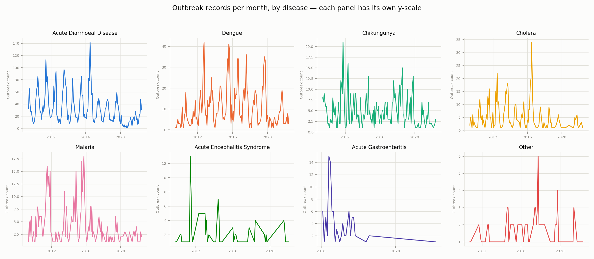

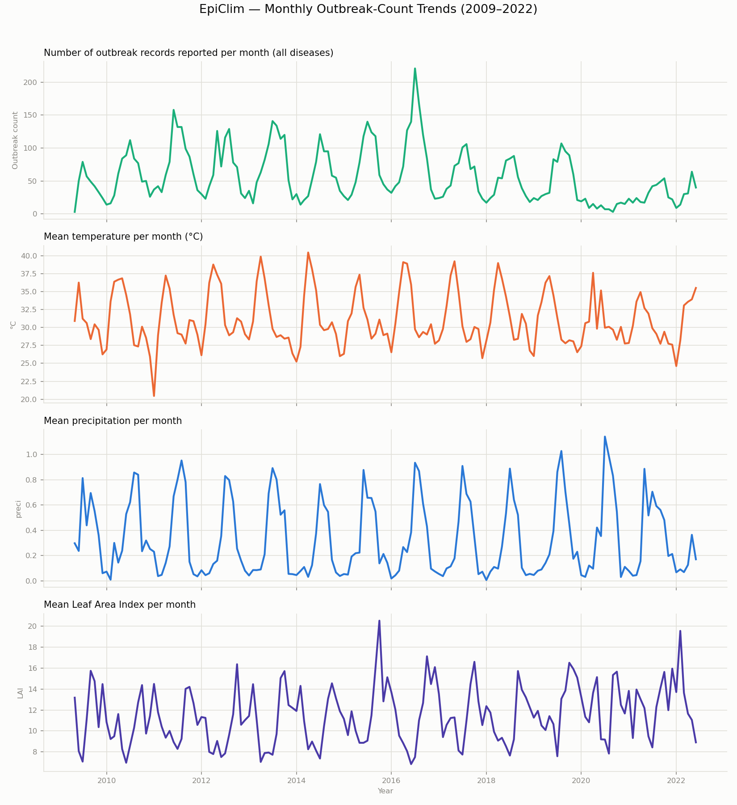

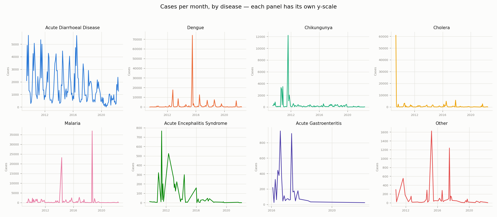

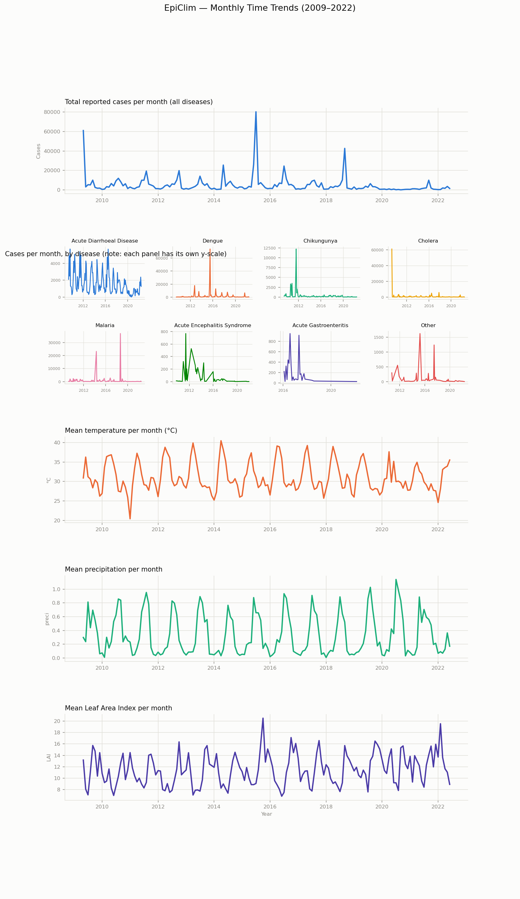

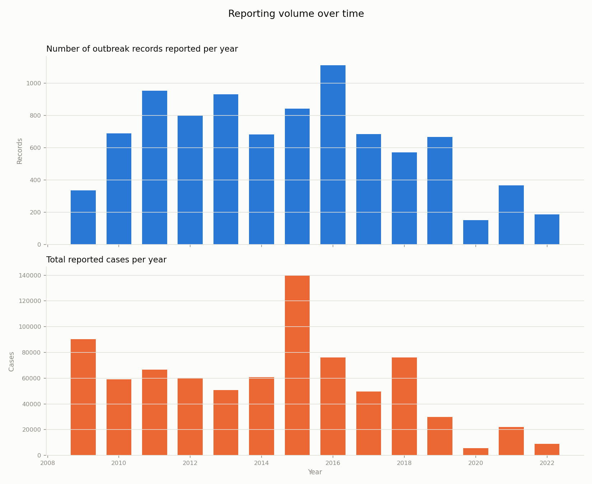
Season: which month each disease peaks

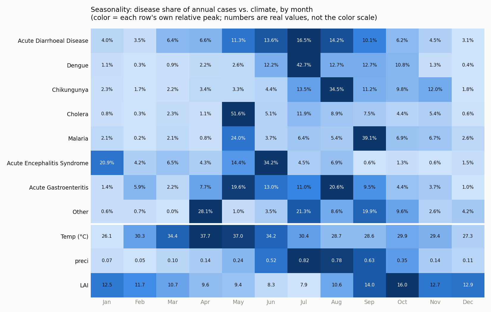

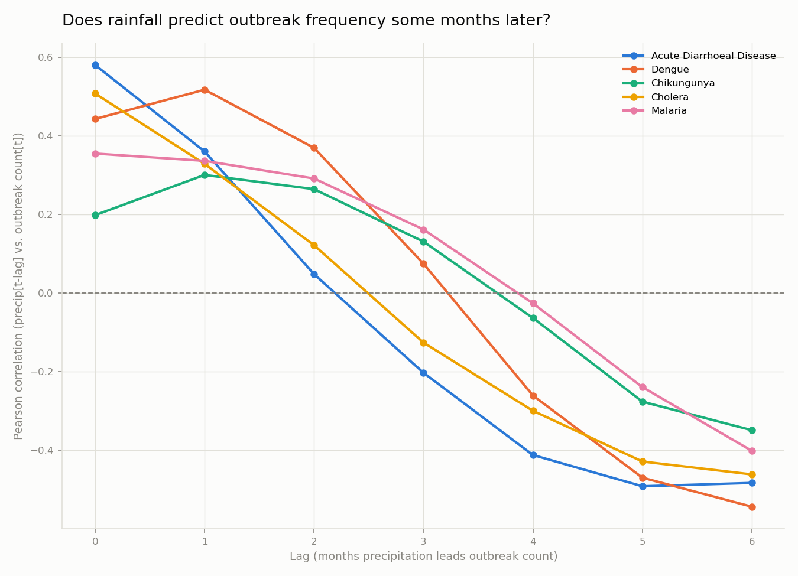
Place: where each disease happens

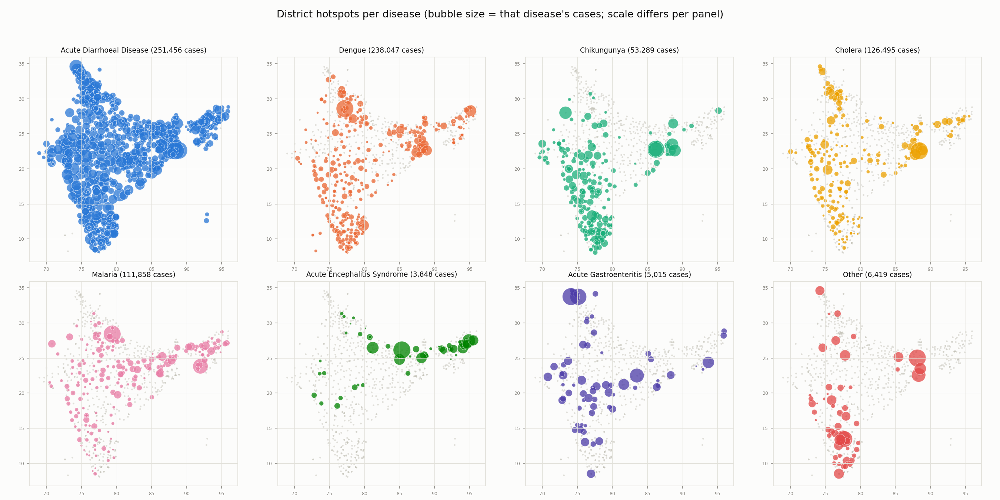

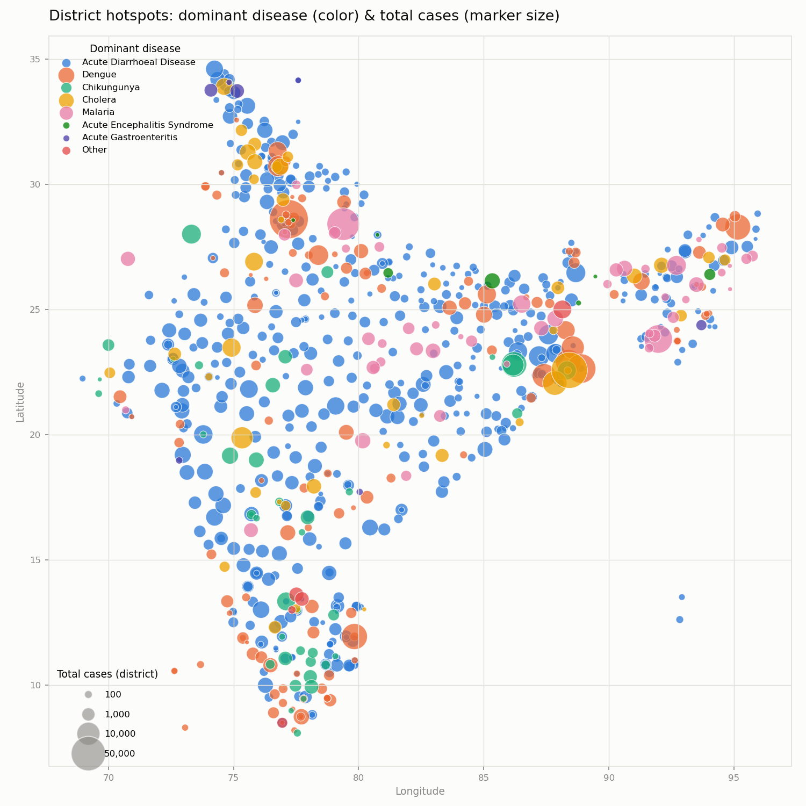

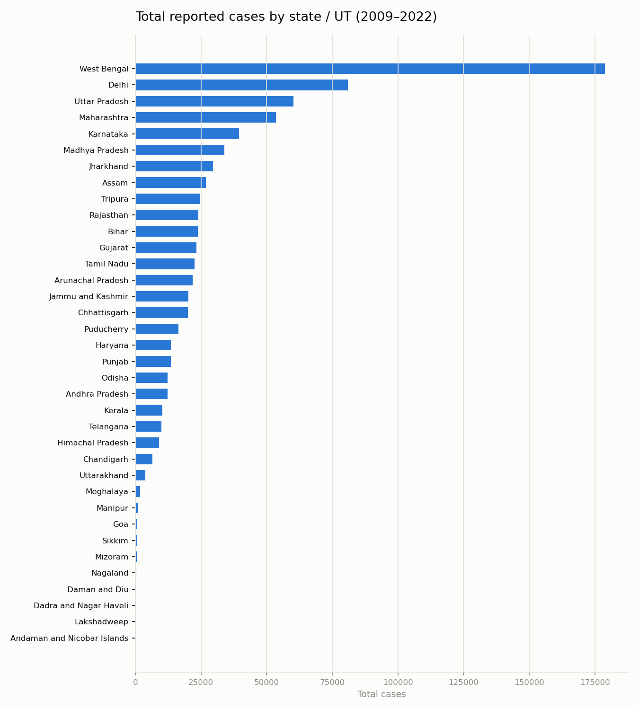
Distributions & correlations

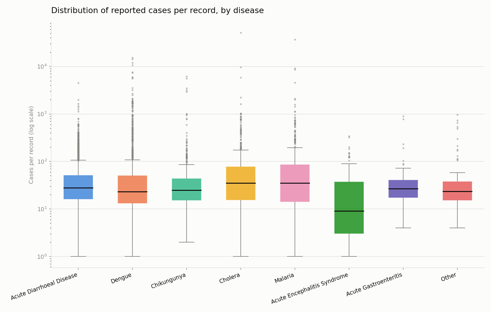

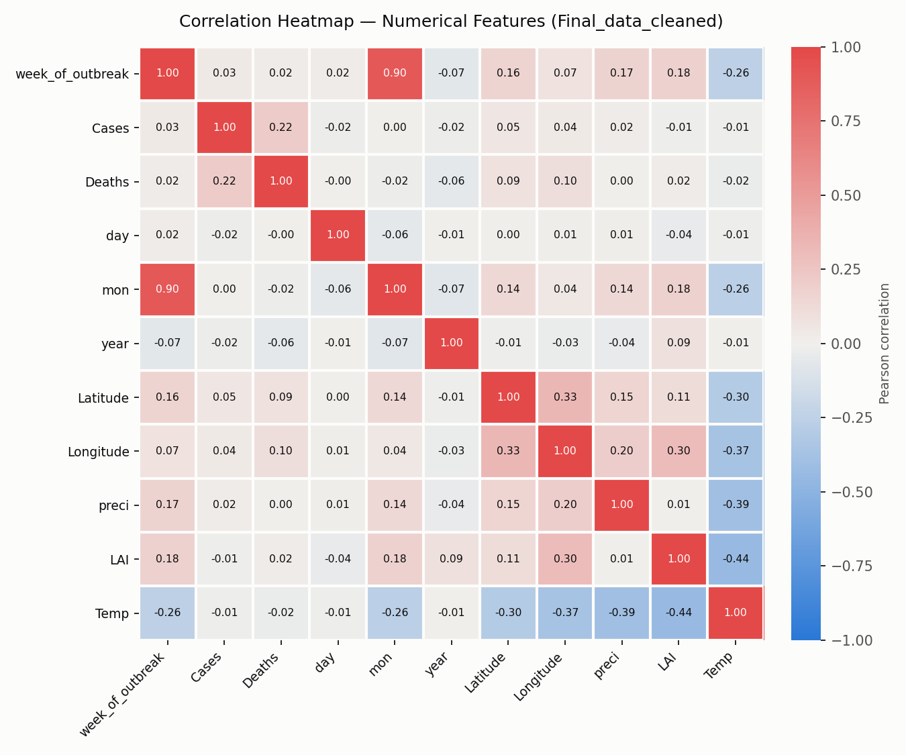

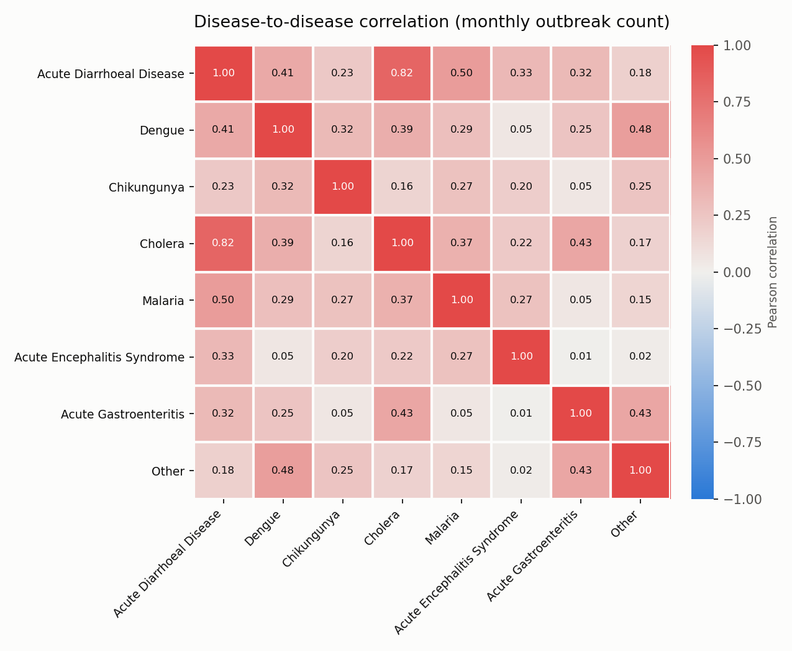
Hypothesis tests
Five hypotheses, together using all seven of the course's tests. Every test reports an effect size as well as a p-value: with about 9,000 rows almost anything is "significant", so the effect size says whether it matters. Multiple tests within a hypothesis are corrected (Holm or Bonferroni).
| # | Hypothesis | Tests | Result | Effect size |
|---|---|---|---|---|
| H1 | Rainfall lag differs by transmission route | Pearson, Spearman | H₀ rejected for all 5 diseases. Dengue/Chikungunya strongest at lag 1; ADD/Cholera at lag 0; Malaria roughly tied. Pearson and Spearman agree. | r = 0.20 – 0.58 |
| H2 | Each disease's outbreaks are seasonal | Chi-square goodness-of-fit | H₀ rejected for all 8 diseases; every peak month is in June–September. Chikungunya weakest (one 2011–12 epidemic wave). | Cramér's V 0.10 – 0.26 |
| H3 | Diseases occur at different temperatures | ANOVA, Kruskal-Wallis, Mann-Whitney post-hoc | Rejected, tiny effect ANOVA assumptions fail, so Kruskal-Wallis is trusted; both reject. Chikungunya warmest, AES coolest, likely because of where they occur. | ε² = 0.019 |
| H4 | Disease type depends on region | Chi-square independence | H₀ rejected χ²(30) = 1440. Chikungunya → South, AES → Northeast, Malaria → Central/Northeast, Cholera → North. | Cramér's V = 0.18 |
| H5 | More outbreaks in monsoon months | Welch t-test, Mann-Whitney U | H₀ rejected Median 95 vs. 35 outbreaks per month. Counts are skewed, so Mann-Whitney is the more trustworthy test; both agree. | d = 1.91, r = 0.81 |
Predicting outbreaks
Forecasting national totals isn't viable (158 months, distorted final years). Instead each model predicts: will this district report an outbreak this month? Every model is compared with the same model without climate features, to measure what climate adds.
About 5% of district-months have an outbreak.
Month, region, location, regional rainfall/temperature (this and last month), the district's own outbreak history.
Train 2009–2017 · tune on 2018 · test on 2019 · stress-test 2020–22.
Accuracy is meaningless here: always guessing "no" scores ~95%.
Transmission-route models (gradient boosting)
| Model | Diseases | Districts | Random | No climate | With climate | ROC-AUC |
|---|---|---|---|---|---|---|
| Waterborne | ADD, Cholera, Acute Gastroenteritis | 611 | 0.040 | 0.133 | 0.130 | 0.744 |
| Aedes mosquito | Dengue, Chikungunya | 315 | 0.043 | 0.187 | 0.185 | 0.813 |
| Anopheles mosquito | Malaria | 184 | 0.008 | 0.058 | 0.093 | 0.865 |
PR-AUC on the 2019 test year, except the last column (ROC-AUC, with climate). Anopheles has only 18 test outbreaks, too few to judge.

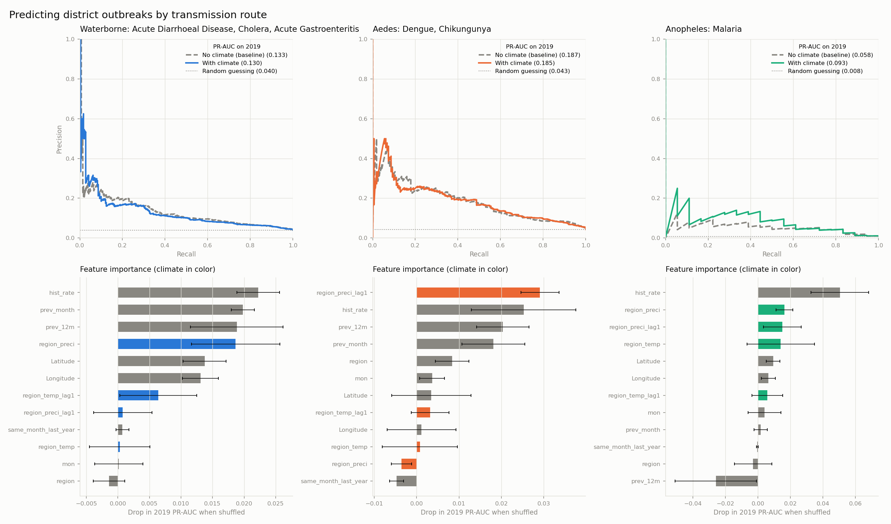
Reference: any-disease model
One model for any outbreak, comparing logistic regression and gradient boosting. Both reach PR-AUC ≈ 0.196 against 0.061 for random (about 3.2×), with or without climate. It's mostly an ADD model, since ADD is 57% of records, which is why the route-specific models were built.

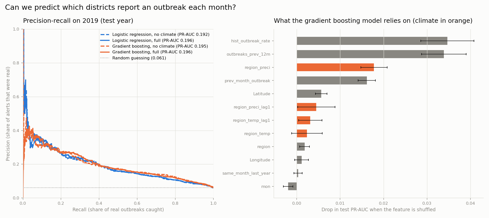
What the models tell us. Climate and outbreaks move together (H1, H2, H5), but region-level climate carries no information beyond "what month is it" and "has this district had outbreaks before". When climate features are added, the models use rainfall instead of the month, not on top of it. At the chosen cut-off, about 1 in 4 alerts is a real outbreak: useful as a ranking, not as a stand-alone early-warning system.
Limitations & future work
- Reported, not actual, outbreaks. The data only contains outbreaks that were reported, so a missing record may mean "not reported" rather than "no outbreak". Surveillance capacity varies by state and year.
- Raw counts, not rates. Districts aren't normalized by population.
- Coarse climate. Climate exists only on outbreak rows, so the models use regional monthly averages. District-level rainfall (IMD gridded data or CHIRPS) is the obvious next step.
- Autocorrelation. Consecutive months aren't independent, so time-series p-values are optimistic; effect sizes are the fairer guide.
- Deaths unusable. 71.6% missing, filled with 0, so fatality rates weren't analyzed.
- Future work: neighbouring-district outbreak features, population normalization, confusion matrices and bootstrap confidence intervals for model metrics.
Reproduce
Every result regenerates from the raw dataset. Run the numbered scripts from the repository root:
pip install -r requirements.txt python scripts/01_profile_dataset.py # profile python scripts/02_clean_dataset.py # clean python scripts/03_impute_dataset.py # impute python scripts/04_correlation_heatmap.py # ... EDA plots 04–19 python scripts/20_h1_precip_lag_test.py # ... hypothesis tests 20–24 python scripts/25_build_district_month_grid.py python scripts/26_train_outbreak_model.py python scripts/28_train_route_models.py
Full plot-by-plot findings are in EDA_FINDINGS.md, and the project decisions in spec.md.